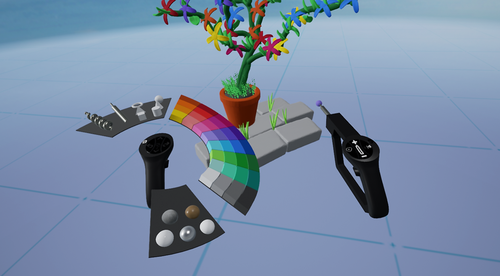
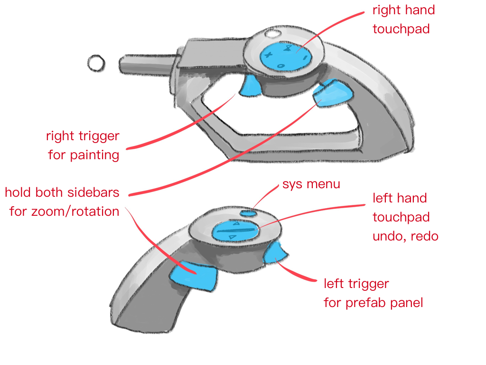
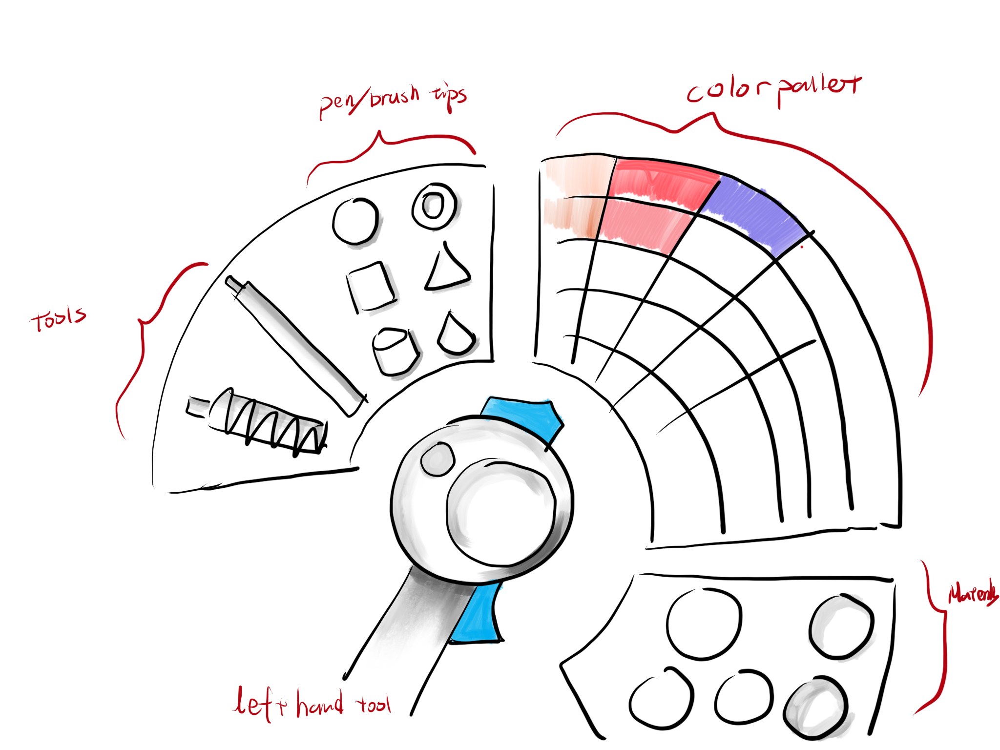
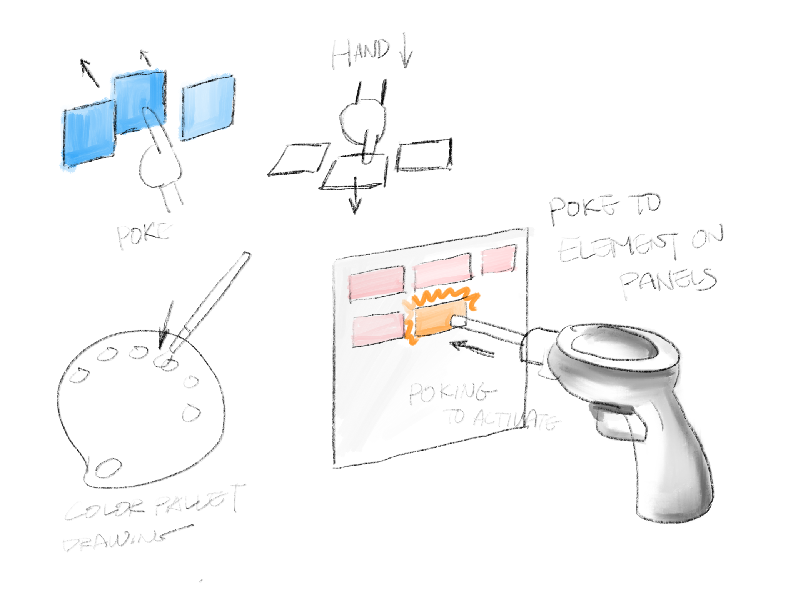
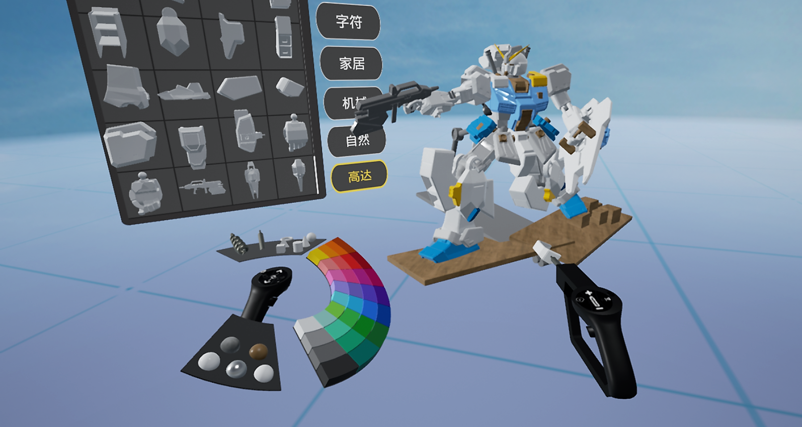

Recognizing that existing 2D PC software like ZBrush presented a steep learning curve for beginners interested in 3D modeling, I joined a cross-functional team to design "CastBox," an immersive VR creativity tool.


Tasked with making digital sculpting intuitive, I explored spatial UI layouts and ultimately designed a "fan-out" tool palette that mimicked physical oil painting, keeping tools easily accessible on the user's virtual hands.
Contributing to the full product lifecycle from ideation to deployment, I helped replace traditional 2D paradigms with immersive 3D interaction models, delivering a highly accessible VR experience that significantly lowered the barrier to entry for 3D content creation.



This early exploration of VR ignited my passion for spatial interaction, and I aim to continue developing creative tools that align with human intuition to empower everyone's imagination.